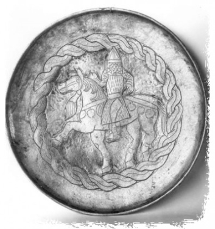
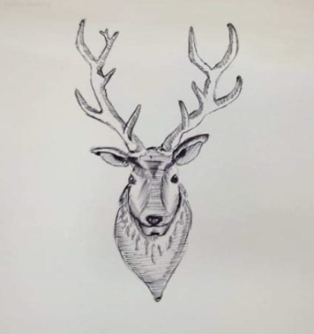
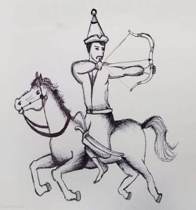
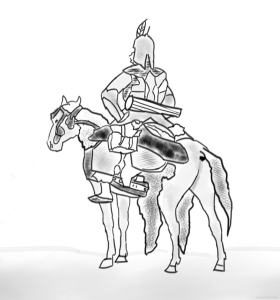
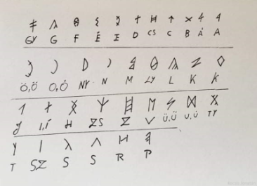
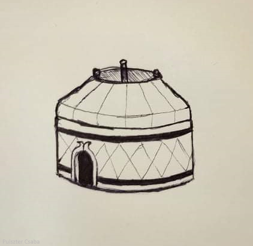

Honfoglalás
Projektmunka
11.C
Történelmi Háttér
Etelközből kiszorulván, Árpád népével a Dnyeszter mentén észak-nyugati irányban vonult tovább. A magyar törzsek 895 táján kezdték meg az ország elfoglalását. Először az Alföldet és Erdélyt szállták meg, 900-ra pedig birtokba vették a Kárpát-medence Dunától keletre eső felét. Nem ütköztek számottevő ellenállásba, de ezt valószínűleg már előre tudták, hiszen nem először jártak ezen a vidéken. A Kárpát-medence döntő része a frank és a bolgár birodalom határvidékének számított.

A Dunántúlt Zalavár központtal frank vazallus szláv fejedelmek irányították. A frankok a Dunáig tartották saját földjüknek Pannóniát, ettől keletre már a bolgár birodalom határai kezdődtek. A Dunától északra a morvák voltak az urak. Az északi szláv nép éppen a magyar honfoglalás előtt alapított államot Szvatopluk vezetésével. Egyes vélemények szerint a honfoglaló magyarok a Kárpát-medencében késői avarokat, valójában magyar etnikumú népességet találtak. A "kettős honfoglalás" elmélete azzal érvel, hogy a 670 körüli onogur népvándorlás alatt érkezett a Kárpát-medencébe a magyarok első hulláma.

A 10. században pedig nem történt más, mint az Alföldön élő kései avarok összeolvadtak az újólag beérkező magyar népességgel. A helynévkutatás segítségével halvány képet kaphatunk a honfoglaló magyarság letelepedéséről. Árpád szállásterülete a Duna két partján volt, s talán ő felügyelte a bihari és a nyitrai részeket is. A Gyula Erdélyt, a Harka (bíró) feltehetőleg a Dunántúl nyugati részét kapta. Úgy tűnik, a letelepült törzsek a folyók mellett alakították ki szállásterületeiket. A másik jelentős elmélet László Gyula nevéhez fűződik. A kettős honfoglalás elmélete szerint a magyarság ősei két lépcsőben szállták meg a Kárpát-medencét.
Az első szakasz 670 körül volt (griffes-indás kultúra), míg a második szakasz a jól ismert 9. század végi bejövetel. Figyelemreméltó, hogy az itt lakó avarok és magyarok között harci cselekményre nem került sor, ami a két kultúra azonosságát vagy legalábbis nagyfokú hasonlóságát jelenti. László Gyula szerint az avarok és magyarok egymáshoz hasonló nyelven beszélhettek.
Harcművészet
A harcművészet és a küzdősport szót általában ugyanabban a jelentésben használják. Mégis, ha megfigyeljük a különböző küzdősportok/harcművészetek ágait, elég könnyedén megkülönböztethetünk két fő irányvonalat, melyet sokan önkényesen, de nem minden alap nélkül egyik vagy másik névhez rendelnek. Így harcművészetnek inkább azokat az ágakat és formákat nevezik, melyek mögött egy spirituális és/vagy szellemi rendszer is áll, illetve amelyek nem a küzdést és az abban való győzedelmeskedést helyezik a fókuszba. Másképp ez valódi művészet, a művész pedig az alkotást és az önmegvalósítást tartja művészete céljának. Versenyről itt is beszélhetünk, de az nem a ringben, hanem inkább az életben játszódik. Fontosabb a harcművészetben a kibontakozás és valamiféle magasabb rendű elvvel való harmónia kialakítása. A harcművészet egy tipikus leírása a festőművésszel való összehasonlítás. A festőnek rendelkezésére áll a paletta az alapszínekkel, valamint a vászon és az ecset. A felhasznált színeket viszont ő maga keveri ki, és a vonalakat is ő húzza, mindezt a saját stílusában, a saját látásmódja, érzései és érzelmei által vezérelve. A harcművésznek rendelkezésére állnak a technikák és formák, amelyeket szabadon módosít és kombinál a saját célja, valamint az adott helyzet szerint. A küzdősport szóhoz pedig inkább azokat rendelik, melyek letisztultak, nem hordoznak kulturális vonásokat, bármilyen kultúrához csatolhatók, inkább a testi értelemben vett harcot fejleszti, és nem, vagy csak nagyon kismértékben foglalkozik más kultúráknak a hozadékával, vagy a szellemi értelemben vett harccal.
Lovasíjászat
A lovasíjászat egy harcművészet, de Magyarországon már indult kezdeményezés, hogy olimpiai sportág legyen. Lényege, hogy egy mozgó ló hátáról íjjal kell célba lőni. A történelem során elsősorban a lovasnomád nagyállattartó népekre jellemző sajátságos harcmodorhoz köthető. Napjainkra a világon csak Magyarországon és Erdélyben foglalkoznak vele komolyan, de Kassai Lajosnak köszönhetően már szinte a világ minden részén létezik.
Története
A lovasíjászat kialakulása az ázsiai sztyeppék lovasnomád népeihez köthető. Legismertebb alkalmazói a szkíták, hunok, szarmaták, bolgárok, magyarok, kunok, törökök, mongolok, pártusok.

A lovasíjász harcmodor
A lovasíjászatra a visszacsapó íjakkal és a lovakkal való bánás magas szintű összhangja jellemző. A ló kitágítja a harci alkalmazás lehetőségeit a gyalogos íjászattal szemben, hiszen lövés közben is helyváltoztatásra képes. Az ellenséges sorokat általában távolról indított nyílzáporral próbálták megtörni, miközben ők maguk mozgásban lévén nem nyújtottak könnyű célpontot az ellenfél gyalogos íjászainak. Az ellenséget körbe lovagolva, folyamatosan támadták. Gyakran színleltek menekülést, mely szintén az ellenséges sorok felbomlását eredményezte, mivel üldözőbe vették őket, viszont az üldözők továbbra is célpontot jelentettek. A könnyű fegyverzet, és a tartalék lovak használata lehetővé tette jelentősebb távolságok megtételét is. Közelharcban is megállták a helyüket a harcosok, mivel nem csak íjjal bántak jól, hanem egyéb fegyverekkel is: kelevéz, szablya, fokos, csatacsillag. A lovakra jellemző volt a lobbanékonyság, gyorsaság, szilajság. A lovak is egyfajta fegyverként működtek. Az őseink által használt íjak a leletek szerint 35–60 kg húzóerőt kívántak meg.
A lovasíjászat napjainkban
Napjainkra a klasszikus sztyeppei lovasíjászat nem maradt fent. A koreai népek körében a Hwarang-do, Japánban a Yabusame, Kasagake és az Inuoumono nevű népi játékokban találkozunk vele, de ezekben is inkább a szellemiség, mint a harcszerűség gyakorlása az elsődleges. A Yabusame események Japánban ma is népszerűek, habár inkább hagyományőrzési célból rendezik őket, mint valódi sportként. Itt egy 255 méteres pályán kell hagyományos öltözetben végig lovagolni és három célt eltalálni. Közben pedig minden lövésnél az íjászok ‘in-yo-in-yo’ kiáltást hallatnak, amely a fényre és a sötétségre utal (akár csak a yin és a yang), nyilak pedig sivító hangot adnak ki. A lovasíjászat sportként való újrateremtésének közismertté vált alakja Kassai Lajos. Több évtizedes kutatás és gyakorlás után mára megteremtette a modern kori lovasíjász sportot, melyet világszerte egyre többen űznek. A verseny során egy 90 m hosszú pályán kell végig vágtatni, és közben a céltáblákra (3 db) előre, oldalra és hátrafelé fordulva lőni. Szintén kiemelkedő Kelemen Zsolt szerepe, aki a lovasharc keretében nemcsak a lovasíjászat, hanem a lovas népek, különösen a hunok és a honfoglaló magyarság lovas harci kultúráját próbálja gyakorlati módszerekkel is rekonstruálni. A lovasíjászok egy része – köztük maga Kassai Lajos is – előszeretettel alkalmazza edzésmódszerként a futásíjászatot. Erre magyarázat lehet, hogy mindkét sport esetében felfokozott testi állapotban kell jól lőni, továbbá a lovasíjászathoz és a futásíjászathoz is elengedhetetlen a jó kondíció – így a két sportág jól kiegészítheti egymást. Magyarországon a lovasíjászatot első sorban Kassai Lajos tartja életben, aki a Kassai-völgyet is üzemelteti Kaposmérőn, ami a világon az egyik legjobban felszerelt lovasíjász-központ. Ő az, aki a lovasíjászat oktatását is megszervezi. Kaposmérő mellett még néhány helyen vannak lovasíjász központok, például Gútán, Debrecenben, Hódmezővásárhelyen de még Ausztriában is, ahol versenyeket is rendeznek. A központok egyébként kánságokba vagy törzsekbe tömörülnek, a törzsfővel, avagy kánnal az élükön. Minden évben több versenyt is rendeznek, bár ezek hivatalosan nem számítanak magyar bajnokságoknak.

Besenyő harcos
A 10-11. században a besenyők félelmetes harcosok hírében álltak, akik nagy hatást gyakoroltak Kelet- és Közép-Európa történelmére. A besenyő harcosok felszerelése, harcmodora alig különbözhetett a magyarokétól, ezt jelzi, hogy a kora Árpád-korban betelepülő besenyők könnyen integrálódtak a magyar hadszervezetbe.
A magyar nyelv
A Kárpát-medencei rovás Európában egyedülálló írásrendszer, mássalhangzós rövidítési módja miatt. Az egyik legfontosabb jelenleg ismert rovásos régészeti leleten, a Nagyszentmiklósi kincsen is megtalálható a Kárpát-medencei rovás. A Kárpát-medencei rovás magyar írások közé, másrészt a rovás íráscsaládba tartozik. A Kárpát-medencei rovással kapcsolatban számos, gyakran eltérő a vélemény . Azonban a Nagyszentmiklósi kincs felfedezése óta kétségbevonhatatlan az írás létezése. Ezzel az írással készült emlékek a székely–magyar rovásírásos emlékek túlnyomó többségénél korábbiak és a Kárpát-medence VII-XI. századi történetére vonatkozóan forrásértékűek. Ezért a Kárpát-medencei rovás ismerete a régészet, a történettudomány, a nyelvtörténet és a nyelvészet szempontjából is fontos értékkel bír. Ugyanakkor az a tény, hogy legalábbis a legkorábbi magyar szövegemlékek Kárpát-medencei rovással készültek, a magyar művelődéstörténet szempontjából is kiemelt jelentőségűvé teszi ezt az írást. A magyar nyelv a finn-ugor nyelvághoz tartozik. A finn-ugor nyelvág népei a magyarok, vogulok, osztrákok, zürjének, votjákok, lappok, finnek, mordvinok és cseremiszek valamikor az ősidőkben, Ázsia pusztaságain, közös nyelvet beszéltek s csak mikor egy-egy törzs kiszakadt az ősi közösségből és más tájakra vándorolt, akkor kezdett ennek a különvált törzsnek örökségként magával vitt nyelve is megváltozni. A különválás és önálló nemzeti fejlődés kora a múlt idők homályába vész. A mai finn-ugor népek bizonyára réges-régen megkezdték önálló életüket, mert manapság rendkívül nagy a nyelvi különbség közöttük. Különösen a magyar fejlődött önállóan s a többitől végképen elszigetelve. A magyar és legközelebbi rokonnyelve, a vogul között körülbelül olyan a viszony, mint az indoeurópai nyelvek körében a latin és görög között. A magyar nyelv ősi szókészlete finn-ugor eredetű. A rokonsági elnevezések, testrészek, közönségesebb állatok, növények, ásványok és az ősi foglalkozáshoz való eszközök nevei, továbbá az egyszerűbb számnevek és igék jórészt finn-ugor származásúak. De a finn-ugor alapnyelvből származó eredeti szókészletet nagyon sok idegen elem gazdagította. Még az ősidőkben történt az iráni, kaukázusi és mongol nyelvhatás. Ezt nyomon követte a török népek nyelvi hatása. Az utóbbi különösen szembeötlő. A magyarság Oroszország területén századokon át élt különböző török törzsek szomszédságában. Ez a szomszédság s egyes törökfajú néptöredékek beolvasztása különösen a földművelésre és állattenyésztésre vonatkozó szavakkal gazdagította a magyar nyelvet.
Ezt a szöveget itt találhatjátok meg.

Kárpát-medencei rovásírás
A finnugrisztika kutatásai szerint a magyar nyelv legközelebbi rokonaitól mintegy 3000 éve válhatott el,így a nyelv története az i. e. 11-10. század tájékán kezdődött. Az i. e. 1. évezred-i. sz. 1. évezredet felölelő korszak az ősmagyar kor. A magyarok – a feltételezések szerint – fokozatosan megváltoztatták életmódjukat, letelepedett vadászokból nomád állattenyésztők lettek, talán a hasonló életmódot folytató iráni népekkel való kapcsolatteremtés nyomán. Legfontosabb állataikat a ló, a juh és a szarvasmarha képezhette. Írásos emlékek e kezdeti korból nem maradtak fent, de a kutatások megállapítottak néhány egykorú kölcsönszót, mint a török nyelvekből vagy a permi nyelvekből. Egyesek szerint permi eredetű a főnévi igenév ‑ni képzője, annak ellenére, hogy a török nyelvben -mek és -mak, a csuvasban pedig -me és -ma, hangrendtől függően. Az eurázsiai sztyeppén az 5–10. században élő népek nyelvei több különböző, elsősorban török, indoeurópai (szláv és iráni) és a finnugor nyelvcsaládhoz tartoztak. A történeti összehasonlító módszerrel dolgozó nyelvtudomány mai általánosan elfogadott kutatási eredményei szerint a magyar nyelv finnugor eredetű. Ezt csak akkor lehetne vitatni, ha erről a módszerről kiderülne, hogy nem alkalmas a nyelvek rokonságának feltérképezésére, de ebben az esetben a világ minden nyelvcsaládját újra kellene vizsgálni. A honfoglalás kori magyarságra emellett széles körben jellemző volt a kétnyelvűség is. Nem csak a magyarsághoz csatlakozott, később asszimilálódó török népcsoportok, a kavarok, a volgai bolgárok bizonyos csoportjai (egyes kutatók, mint Kristó Gyula, ide sorolják a székelyeket is), hanem a magyarok nagy része is beszélt egy törökös nyelvet a magyar mellett.
Ezt a szöveget itt találhatjátok meg.
A fehér ló mondája
Árpád vezér és nemesei hallottak Pannonia gazdagságáról, hogy legjobb folyó a Duna, és jobb föld a világon sehol sincsen, ezért közös elhatározással elküldtek egy hírszerzőt, név szerint Kund fia Kusidot, hogy az egész földet szemlélje meg, és a föld lakóit kérdezze ki. Amikor Kusid Magyarország közepébe eljött, és a Duna menti részekre leszállott, azt látta, hogy a táj kellemes, körös-körül a föld jó és termékeny, a folyó jó és füves. Mindez tetszett neki. Ezután elment a tartomány fejedelméhez, aki Attila után ott uralkodott, a morva fejedelmet Szvatopluknak hívták. Kusid köszöntötte és népe nevében, átadta ajándékát: Árpád ménesének leggyönyörűbb példányát. Cserébe egy kulacs vizet kértek a Dunából, egy marék földet és egy kis füvet a mezőkről. Amikor Szvatopluk a magyarok szándékát meghallotta, nagy örömmel örvendezett, azt hitte ugyanis, parasztok jöttek, hogy megműveljék az ő földjét; ezért a követet kegyelmesen bocsátotta el. Kusid pedig a Duna vizéből kulacsát megtöltötte, perje fűvel tömlőjét megrakta, aztán fekete földből rögöket vett fel, azzal az övéihez visszatért. Amikor elmondotta mindazt, amit látott és hallott, és a kulacs vizet, a földet és a füvet megmutatta, mindjárt felismerték, hogy a föld igen jó, a víz édes, és a mező füve hasonlatos ahhoz, amit Kusid nekik elbeszélt. Ezután Kusidot a fejedelemhez visszaküldték. Árpád vezér ezalatt a hét vezérrel Pannóniába bejött, de nem mint vendég, hanem mint a föld jogos örököse és birtokosa. Ekkor más hírmondót küldöttek a fejedelemhez, ilyen követséget bíztak rá: - Árpád és vitézei neked azt mondják, hogy azon a földön, amelyet tőled megvettek, tovább semmiképpen se maradj. A földedet lovon, a füvedet féken, a vizedet nyergen megvették, és te szegénységed meg kapzsiságod miatt a földet, a füvet és a vizet nekik átadtad. Amikor a fejedelemnek ezt az üzenetet átadták, mosolyogva így szólt: - Azt a lovat bunkósbottal agyonüssék, a féket a mezőre kivessék, az aranyos nyerget a Duna vizébe hajítsák! Erre a követ így szólt: - Ha a lovat megütteted, a mi kutyáink egyék meg, jól kikerekedik tőle a horpaszuk, ha a féket a fűbe kiveted, kiássuk és a gyerekeknek adjuk a cifra játékot, ha pedig a nyerget a Dunába hajítod, halászaink az aranyos nyerget a partra kiteszik és hazaviszik. Amikor a fejedelem ezt meghallotta, gyorsan sereget gyűjtött, mert félt a magyaroktól. Szövetségeseitől is segítséget kért, majd a csapatokat egyesítette, és a magyarok elé vonult. A magyarok eközben a Duna mellé érkeztek, és egy gyönyörű mezőn hajnalhasadtával csatát kezdtek. Az Úr segedelme velük volt: színük elől Szvatopluk fejedelem futásnak eredt. A magyarok egészen a Dunáig üldözték. Ott Szvatopluk ijedtében a folyóba beleugratott, és a sebes vízbe belefulladt
A mondát eredetileg itt található meg.
Álmos vezér
Kr.u. 819-ben Ügyek ( Ügyek fia Előd) volt Szkítia vezére. Feleségétől, Emesétől született Álmos nevű fia. Három hipotézis létezik Álmos nevének eredetére: * Anyjának álmában látomása volt, melyben őt egy turulmadár teherbe ejtette. Méhéből forrás fakad, és ágyékából királyok származnak, akik nem saját hazájukban sokasodnak el. Mivel fia születését álom jelezte, Álmosnak nevezték el a gyermeket. * Az álmos szó latinul szentet jelent, mivel az ő utódjai szentek lettek. * Mások szerint álmos török szó, ami birodalomszerzést, vételt jelent, és Álmos innen kapta a nevét. Később feleségül vette az egyik nemes vezér lányát, akitől Árpád nevű fia született. Álmos kegyes, bőkezű, derék katona volt. Magas termetével kiemelkedett a többiek közül, barna szemű, nagy kezű volt. Hazájuk (korabeli nyelven Dentumoger) elnépesedett, ezért a magyarok hét vezére úgy döntött, hogy új hazát keresnek. Pannóniát választották, Atilla király földjét. Hadakozásaik során már jártak itt, és tudták, hogy nagyrészt lakatlan vidék. Vezérre volt szükségük, Álmosra esett a választásuk. Szövetségüket vérszerződéssel pecsételték meg. Kr.u. 884-ben Álmos vezérlete alatt indultak el. Pusztákon, folyókon mentek keresztül, vadásztak, halásztak. Szusztálban, egy orosz tartományban megtelepedtek egy időre, majd egy másik tartományba mentek. Itt nem maradhattak, mert sasok támadták meg őket, akik minden állatukat elragadták. De van egy másik elképzelés is. Eszerint a magyarok (vagy türkök) Etelközben telepedtek le, a kazárokkal egyesültek. Ekkor Álmos helyett annak fiát, Árpádot választották vezérnek, mert Ő rátermettebb lett, mint apja. Kr.u. 894-ben Leó, római császár megbízásából a magyarok megtámadták a bolgárokat. Ennek végeredménye az lett, hogy a bolgár Simeon, az uralkodó, kiegyezett Leóval. Azonban ő bosszúból a besenyőket kérte meg, hogy kergessék el a magyarokat. Éppen akkor támadtak, amikor Árpád és fia, Levente vezérlete alatt a magyarok Pannóniába mentek hadjáratra. A besenyők az itt maradt türköket kirabolták és elkergették. Így telepedtek le Pannóniában. Az öreg Álmos nem léphetett be Pannóniába a besenyő támadás miatt. Feláldozták még azelőtt, hogy elérték volna későbbi hazájukat, Erdőelvében.
A mondát eredetileg itt található meg.
Jurta főbb jellemzői

- passzív szigetelőrendszerrel ellátott,
- fűthető,
- egész évben használható
- hosszú távon megbízható
- magas komforthatást nyújtó
- világos belső terű
- letisztult, arányos formavilággal bíró,
- többfunkciós,
- korszerű és innovatív
Jurta területe/kerülete
-
Henger Térfogat:
r * r * 3,14 * H = 2,25m * 2,25m * 3,14 * 2m = 31,7925 m3 -
Henger kerülete:
4,5* 3,14 = 14,13 -
Henger Területe:
r * r * 3,14 = 2,25m * 2,25m * 3,14 = 15,89 m2 -
Kúp térfogat:
(r2* 3,14 *H) / 3 = (2,25m * 2,25m * 3,14 * 2) / 3 = 10,5975 m3